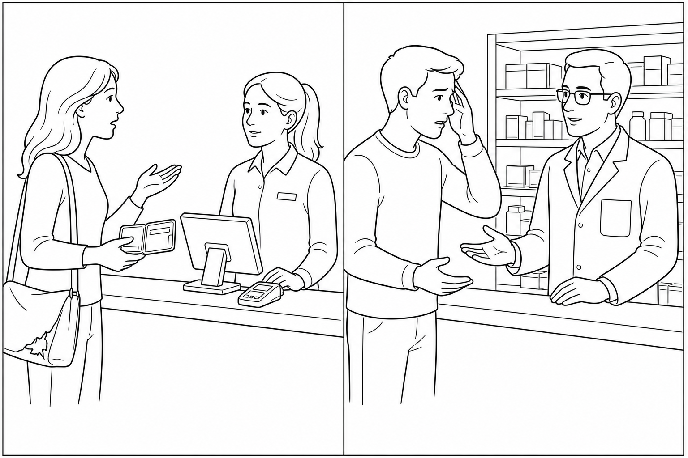

B4 Foundation Test 2
Messages, disruptions, services, customer support, and health. Show that you can understand a problem, identify what happened, and communicate a useful solution.

| Section | Points | Score |
|---|---|---|
| 1. Listening | 25 | ____ / 25 |
| 2. Reading | 20 | ____ / 20 |
| 3. Writing | 20 | ____ / 20 |
| 4. Grammar and Vocabulary | 35 | ____ / 35 |
| Total | 100 | ____ / 100 |
Suggested time: 70 minutes. The teacher will read the listening text twice. You may take short notes. In open tasks, write enough information to solve the situation.
Give students 45 seconds to preview Questions 1–5. Read the complete script twice, with a 30-second pause. Total recommended time: Listening 12 min, Reading 15 min, Writing 18 min, Grammar/Vocabulary 25 min.
Listening: A Wrong Order and an Allergy
Agent: City Food Delivery. How can I help?
Customer: My order was delivered twenty minutes ago, but the wrong meal was sent. I ordered vegetable noodles without peanuts. This meal contains peanuts, and I am allergic to them.
Agent: I'm sorry. Have you eaten any of the food?
Customer: No, I haven't. I checked the label first. The restaurant told me to contact you.
Agent: Good. Please keep the food and take a photo of the label. A replacement can be delivered in about thirty minutes, or we can give you a full refund.
Customer: Did you say the replacement will arrive in thirty minutes?
Agent: Yes. I will also add an allergy warning to the new order.
Customer: Thank you. I would like the replacement, please.
What was wrong with the delivery?
The wrong meal was sent / delivered.Why are the peanuts especially important?
The customer is allergic to peanuts.Who told the customer to contact the delivery company?
The restaurant.What two actions does the agent ask the customer to take?
Keep the food and take a photo of the label.Which solution does the customer choose, and when should it arrive?
A replacement; in about 30 minutes.Reading: Hotel Service Follow-up
Dear Mr. Santos,
We are writing about the room problem you reported last night. The heater in Room 214 could not be repaired, so a new room has been prepared for you on the third floor. Room 318 is next to the elevator and has already been checked by our manager.
Please collect the new key from the reception desk after breakfast. Bring your old key, but you do not need to move your bags alone. A staff member who works near your room can help you at 10:00. We have also removed last night's room-service charge from your bill.
We apologize for the inconvenience.
Why was a new room prepared?
Because the heater in Room 214 could not be repaired.Where is the new room?
On the third floor, next to the elevator; Room 318.What should Mr. Santos bring to reception?
The old key.Name two solutions the hotel has provided.
Any two: prepared a checked new room; offered help moving bags at 10:00; removed the room-service charge.Writing: Explain a Service Problem
Your card was charged twice for a hotel booking. Write 70–90 words to customer support. Include:
- what was charged and when;
- what you had done before you noticed the problem;
- what the hotel or bank told you;
- what evidence you have;
- the solution and time frame you want.
Hello, my card was charged twice for booking 4821 yesterday. I had already paid online before I arrived at the hotel. The receptionist told me that only one payment appeared in their system. I have the booking email, hotel receipt, and two bank notifications. Could the second charge be refunded within five business days? Please confirm the next step. Thank you.
| Writing criterion | Points | Teacher score |
|---|---|---|
| Completes the purpose and includes required details | 8 | ____ / 8 |
| Problem, evidence, and request are organized clearly | 4 | ____ / 4 |
| Target language supports meaning | 4 | ____ / 4 |
| Vocabulary, spelling, and punctuation are clear enough | 4 | ____ / 4 |
Reward the student's ability to document the problem and request a concrete resolution. Do not require every target structure when the message already communicates all five details.
Grammar and Vocabulary in Context
Report the message: The receptionist said, “Breakfast starts at 7:00.”
The receptionist said that breakfast started / starts at 7:00.Report the instruction: The nurse said, “Drink water and rest.”
The nurse told me to drink water and rest.Rewrite with the result first: “The hotel canceled my reservation.”
My reservation was canceled.Rewrite with the result first: “Someone has damaged my bag.”
My bag has been damaged.What to Keep and What to Practice Next
| Skill | Score | Next action |
|---|---|---|
| Listening | ____ / 25 | Listen for problem, evidence, instruction, and promised solution. |
| Reading | ____ / 20 | Identify what was done, what is required, and what is optional. |
| Writing | ____ / 20 | Document the problem and request a concrete resolution. |
| Grammar/Vocabulary | ____ / 35 | Use target forms to clarify sequence, result, identity, and purpose. |